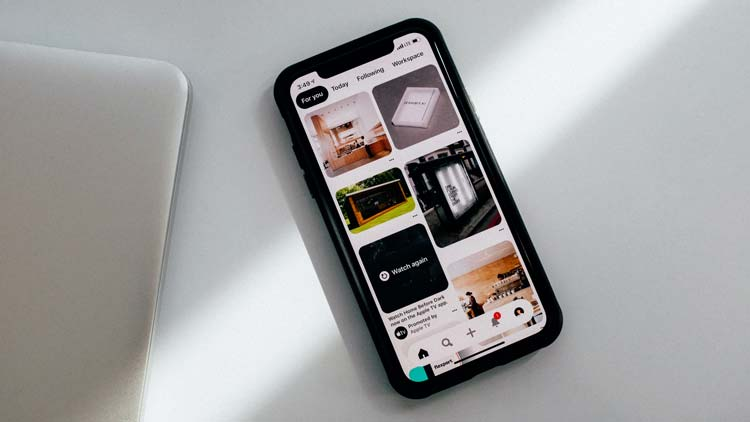

Resources
- 
-

-

MDN Accessibility Documentation
Mozilla's documentation for a wide range of accessibility learning.
Learn More
Frequently Asked Questions
Is accessibility really that important?
Yes! Accessibility makes sure that everyone who visits your website will be able to use it effectively. This improves user experience, treats every user equally, and goes a long way to user retention.
It is also the law! The Government of Ontario (and many others) require base level of web accessibility for all websites for private businesses and not-for-profits with 50+ employees and all public sector organizations. Learn more on the ontario.ca website.
Where can I find a list of all the ARIA attributes?
w3.org is the place to go for all things accessibility, check out their list of ARIA attributes on this page at 6.4 Global States and Properties.